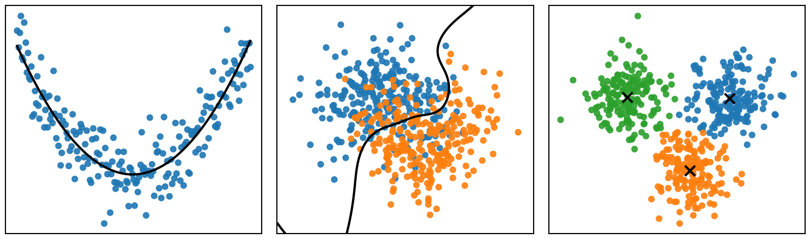

Aprendizaje supervisado
Introducción a machine learning
Introducción
Machine learning
El machine learning o aprendizaje automático estudia métodos que permiten utilizar datos para aprender relaciones, patrones y estructuras en los datos.

Ejemplos de tareas de aprendizaje automático: ajustar una función, separar observaciones en clases y descubrir grupos en los datos.
Variables y observaciones
Supongamos que estudiamos \(p\) variables:
\[ X = (X_1, X_2, \ldots, X_p)^T. \]
Cada \(X_j\) representa una variable o característica medida.
Para una observación \(i\), los valores observados de estas variables son:
\[ X_i = (x_{i1}, x_{i2}, \ldots, x_{ip})^T, \qquad i=1,\ldots,n. \]
Conjunto de observaciones
Un conjunto de \(n\) observaciones de las \(p\) variables, también llamado conjunto de datos (dataset), puede representarse como
\[ \mathcal D = \left\{ x_i \right\}_{i=1}^{n}, \]
donde cada observación es un vector
\[ x_i = (x_{i1},x_{i2},\ldots,x_{ip})^T. \]
Equivalentemente, podemos organizar las observaciones como las filas de una matriz:
\[ \mathcal D = \begin{pmatrix} x_1^T\\ x_2^T\\ \vdots\\ x_n^T \end{pmatrix} = \begin{pmatrix} x_{11} & x_{12} & \cdots & x_{1p}\\ x_{21} & x_{22} & \cdots & x_{2p}\\ \vdots & \vdots & \ddots & \vdots\\ x_{n1} & x_{n2} & \cdots & x_{np} \end{pmatrix} \in \mathbb{R}^{n\times p}. \]
Cada fila corresponde a una observación y cada columna a una variable.
Tipos de aprendizaje
Aprendizaje supervisado
En el aprendizaje supervisado buscamos aprender la relación entre un vector de variables predictoras \(X\) y una variable de respuesta \(Y\):
\[ Y = f(X) + \varepsilon. \]
Para ello, observamos \(n\) pares:
\[ \mathcal D = \left\{(x_i,y_i)\right\}_{i=1}^{n}. \]
El objetivo es aproximar la función desconocida \(f\) para:
- predecir la respuesta \(Y\) a partir de \(X\),
- realizar inferencia sobre la relación entre \(X\) y \(Y\).
Ejemplo
Supongamos que queremos estudiar el precio de una vivienda a partir de algunas de sus características:
| Superficie (m²) | Habitaciones | Antigüedad (años) | Precio (miles de pesos) |
|---|---|---|---|
| 80 | 2 | 15 | 1450 |
| 100 | 3 | 10 | 1750 |
| 120 | 3 | 8 | 2100 |
| 150 | 4 | 5 | 2550 |
El vector de variables predictoras es
\[ X = \begin{pmatrix} X_1\\ X_2\\ X_3 \end{pmatrix} = \begin{pmatrix} \text{Superficie}\\ \text{Habitaciones}\\ \text{Antigüedad} \end{pmatrix}, \]
mientras que la variable de respuesta es
\[ Y = \text{Precio}. \]
Ejemplo
Para cada vivienda observamos una realización \((x_i,y_i)\) de estas variables. Por ejemplo,
\[ x_1 = \begin{pmatrix} 80\\ 2\\ 15 \end{pmatrix}, \qquad y_1 = 1450. \]
El conjunto de datos observado puede representarse como
\[ \mathcal D = \left( \begin{array}{ccc|c} 80 & 2 & 15 & 1450\\ 100 & 3 & 10 & 1750\\ 120 & 3 & 8 & 2100\\ 150 & 4 & 5 & 2550 \end{array} \right) = (X_{\text{obs}}\mid\mathbf{y}). \]
Cada fila corresponde a una observación y cada columna a una variable.
Aprendizaje no supervisado
En el aprendizaje no supervisado observamos \(n\) realizaciones del vector de variables \(X\):
\[ \mathcal D = \left\{x_i\right\}_{i=1}^{n}, \]
pero no existe una variable de respuesta \(Y\) conocida.
Por lo tanto, buscamos descubrir estructura presente en los datos, por ejemplo:
- relaciones entre variables,
- similitudes entre observaciones,
- grupos o patrones presentes en los datos.
Ejemplo
Supongamos que tenemos información sobre clientes de una tienda:
| Edad | Ingreso mensual | Gasto mensual |
|---|---|---|
| 22 | 12,000 | 3,500 |
| 25 | 15,000 | 4,200 |
| 45 | 38,000 | 8,500 |
| 48 | 42,000 | 9,100 |
| 31 | 24,000 | 5,600 |
El vector de variables es
\[ X = \begin{pmatrix} X_1\\ X_2\\ X_3 \end{pmatrix} = \begin{pmatrix} \text{Edad}\\ \text{Ingreso}\\ \text{Gasto} \end{pmatrix}. \]
Ejemplo
Por lo tanto, el conjunto de datos es
\[ \mathcal D = \begin{pmatrix} 22 & 12000 & 3500\\ 25 & 15000 & 4200\\ 45 & 38000 & 8500\\ 48 & 42000 & 9100\\ 31 & 24000 & 5600 \end{pmatrix}. \]
En este caso no existe una variable de respuesta \(Y\). A partir de las variables observadas podemos buscar, por ejemplo, grupos de clientes con características similares o relaciones entre las variables.
Aprendizaje por refuerzo
En el aprendizaje por refuerzo, las observaciones
\[ \mathcal D = \left\{x_i\right\}_{i=1}^n \]
describen el estado de un entorno con el que interactúa un agente.
A partir de cada observación \(x_i\), el agente selecciona una acción \(a_i\) y recibe una recompensa \(r_i\):
\[ x_i \longrightarrow a_i \longrightarrow r_i. \]
El objetivo es aprender una estrategia o política que determine qué acción tomar para maximizar la recompensa acumulada.
A diferencia del aprendizaje supervisado, no conocemos una respuesta correcta \(y_i\); el agente aprende a partir de las consecuencias de sus acciones.
Ejemplo
Supongamos que observamos el estado de un vehículo a partir de las siguientes variables:
| Distancia al objetivo (m) | Distancia al obstáculo (m) | Velocidad (m/s) |
|---|---|---|
| 5.2 | 1.3 | 0.8 |
| 4.5 | 0.7 | 0.9 |
| 3.8 | 2.1 | 0.7 |
| 2.4 | 0.3 | 1.0 |
| 1.2 | 1.5 | 0.6 |
El vector de variables que describe el estado del entorno es
\[ X = \begin{pmatrix} X_1\\ X_2\\ X_3 \end{pmatrix} = \begin{pmatrix} \text{Distancia al objetivo}\\ \text{Distancia al obstáculo}\\ \text{Velocidad} \end{pmatrix}. \]
Ejemplo
En aprendizaje por refuerzo, cada observación \(x_i\) representa el estado del entorno a partir del cual el agente debe tomar una decisión.
Por ejemplo, podemos definir las acciones disponibles como
\[ a_i \in \{ \text{avanzar}, \text{girar izquierda}, \text{girar derecha} \}. \]
También definimos una recompensa que evalúa las consecuencias de las acciones, por ejemplo:
\[ r_i = \begin{cases} +10, & \text{si alcanza el objetivo},\\ -10, & \text{si choca},\\ +1, & \text{si se acerca al objetivo}. \end{cases} \]
Así, la interacción puede representarse de forma simplificada como
\[ x_i \longrightarrow a_i \longrightarrow r_i. \]
El objetivo es aprender una política que determine qué acción tomar en cada estado para maximizar la recompensa acumulada.
Aprendizaje supervisado
Notación
A partir de este punto:
- \(X = (X_1,\ldots,X_p)^T\) es el vector de variables predictoras.
- \(Y\) es la variable de respuesta.
- \(x_i = (x_{i1},\ldots,x_{ip})^T\) es la observación \(i\) de las variables predictoras.
- \(y_i\) es la observación \(i\) de la variable de respuesta.
- \(\mathcal D = \{(x_i,y_i)\}_{i=1}^n\) es el conjunto de datos.
Regresión y clasificación
Los problemas supervisados pueden distinguirse según el tipo de respuesta \(Y\).
| Regresión | Clasificación | |
|---|---|---|
| Tipo de respuesta \(Y\) | Cuantitativa | Cualitativa |
| Valores de \(Y\) | Valores numéricos | Categorías o clases |
| Objetivo | Estimar un valor | Asignar una clase |
| Predicción | \(\hat y \in \mathbb R\) | \(\hat y \in \{C_1,\ldots,C_K\}\) |
| Ejemplo de respuesta | Precio, temperatura, consumo | Positivo/negativo, especie, categoría |
| Ejemplo de problema | Predecir el precio de una vivienda | Clasificar un tumor como benigno o maligno |
La distinción depende principalmente de la variable de respuesta \(Y\), no del tipo de variables predictoras.
Ejemplo
Supongamos que queremos predecir el precio de una vivienda a partir de su tamaño, número de habitaciones y ubicación.
El vector de variables predictoras es
\[ X = \begin{pmatrix} X_1\\ X_2\\ X_3 \end{pmatrix} = \begin{pmatrix} \text{Tamaño}\\ \text{Habitaciones}\\ \text{Ubicación} \end{pmatrix}, \]
y la variable de respuesta es
\[ Y = \text{Precio}. \]
Por lo tanto, planteamos el problema como
\[ \text{Precio} = f(\text{Tamaño},\text{Habitaciones},\text{Ubicación}) + \varepsilon. \]
El objetivo es utilizar datos para estimar la función desconocida \(f\) y utilizarla para predecir el precio de nuevas viviendas.
De forma general
Sea \(X\) el vector de variables predictoras
\[ X = (X_1, X_2, \ldots, X_p)^T, \]
y \(Y\) la variable de respuesta.
La relación entre las variables predictoras y la variable de respuesta se representa como
\[ Y = f(X) + \varepsilon, \]
donde:
- \(f\) representa la relación entre \(X\) y \(Y\).
- \(\varepsilon\) representa el error aleatorio.
Estimación de \(f\)
La función \(f\) es desconocida. A partir del conjunto de datos
\[ \mathcal D = \{(x_i,y_i)\}_{i=1}^n, \]
buscamos obtener una estimación \(\hat f\) de esta relación:
\[ \hat f(X) \approx f(X). \]
La estimación de \(f\) puede tener dos objetivos principales:
- Predicción: utilizar \(\hat f\) para predecir nuevos valores de \(Y\).
- Inferencia: utilizar \(\hat f\) para comprender la relación entre \(X\) y \(Y\).
Predicción
Dados un vector de variables predictoras \(X\) y una variable de respuesta \(Y\), buscamos una función \(\hat f\) tal que
\[ \hat Y = \hat f(X) \quad \text{y} \quad \hat Y \approx Y. \]
Equivalentemente,
\[ \left|Y - \hat f(X)\right| \approx 0. \]
Predecir el precio de una vivienda a partir de características como los metros cuadrados construidos, número de habitaciones, número de baños y antigüedad.
Inferencia
Por otro lado, en inferencia buscamos utilizar \(\hat f\) para comprender la relación entre \(X\) y \(Y\) y aproximar la forma de \(f\):
\[ Y = f(X) + \varepsilon, \qquad \hat f \approx f. \]
En particular, nos interesa entender cómo cada variable \(X_j\) se relaciona con \(Y\).
Estudiar cómo los metros cuadrados construidos, el número de habitaciones y la ubicación se relacionan con el precio de una vivienda.
- ¿Qué variables están asociadas con el precio?
- ¿Cómo cambia el precio al cambiar una variable?
- ¿Qué forma tiene la relación entre cada variable y el precio?
Tipos de métodos
Existen diferentes métodos para estimar la función desconocida \(f\). De forma general, podemos distinguir entre:
- Métodos paramétricos: suponen cierta estructura para representar \(f\).
- Métodos no paramétricos: permiten estimar \(f\) de una forma más flexible.
Métodos paramétricos
Los métodos paramétricos suponen una forma específica para \(f\).
Podemos asumir una relación lineal entre \(X\) y \(Y\):
\[ f(X)=\beta_0+\beta_1X_1+\cdots+\beta_pX_p \]
El problema se reduce entonces a estimar:
\[ \beta_0,\beta_1,\ldots,\beta_p \]
Ventaja: simplifican el problema.
Desventaja: si la forma elegida no representa adecuadamente la relación real, el modelo puede ser poco preciso.
Métodos no paramétricos
Los métodos no paramétricos no imponen una forma específica para \(f\).
Buscan aproximarse a los datos con mayor flexibilidad.
Para predecir \(Y\) para una nueva observación, \(k\)-NN busca las observaciones más cercanas y utiliza sus valores para obtener la predicción.
No suponemos previamente que \(f\) sea lineal, cuadrática, exponencial, etc.
La forma de \(\hat f\) se adapta a los datos.
Ventaja: pueden representar relaciones más complejas.
Desventaja: generalmente requieren más observaciones y pueden ajustarse demasiado a los datos.
Entrenamiento
Para construir y evaluar un modelo, el conjunto de datos \(\mathcal D\) se divide en dos subconjuntos:
- Conjunto de entrenamiento (train): se utiliza para estimar \(\hat f\).
- Conjunto de evaluación (test): se utiliza para evaluar el desempeño de \(\hat f\) sobre datos que no fueron utilizados durante el entrenamiento.
\[ \mathcal D = \mathcal D_{\text{train}} \cup \mathcal D_{\text{test}}, \qquad \mathcal D_{\text{train}} \cap \mathcal D_{\text{test}} = \varnothing. \]
El objetivo es evaluar qué tan bien el modelo generaliza a nuevas observaciones.
Evaluación
En aprendizaje supervisado conocemos la respuesta real \(Y\), por lo que podemos compararla con la respuesta predicha \(\hat Y\).
Por ejemplo, en regresión podemos medir el error mediante el error cuadrático medio:
\[ \text{MSE} = \frac{1}{n}\sum_{i=1}^{n}(y_i-\hat y_i)^2. \]
Sin embargo, no buscamos únicamente un error pequeño sobre los datos utilizados para entrenar el modelo:
- Training error: error sobre los datos de entrenamiento.
- Test error: error sobre datos que el modelo no ha visto durante el entrenamiento.
El objetivo es obtener un test error bajo, es decir, que el modelo sea capaz de generalizar a nuevas observaciones.
Resumen
- Machine learning busca aprender relaciones, patrones o estructuras a partir de datos.
- En aprendizaje supervisado buscamos estimar la relación
\[ Y = f(X) + \varepsilon. \]
- La estimación \(\hat f\) puede utilizarse con objetivos de predicción o inferencia.
- Un modelo debe ser capaz de generalizar a nuevas observaciones.
Referencias
Preguntas

¿Qué sigue?
En la siguiente lección comenzaremos a estudiar métodos de aprendizaje supervisado.
Modelado de Datos · UACJ